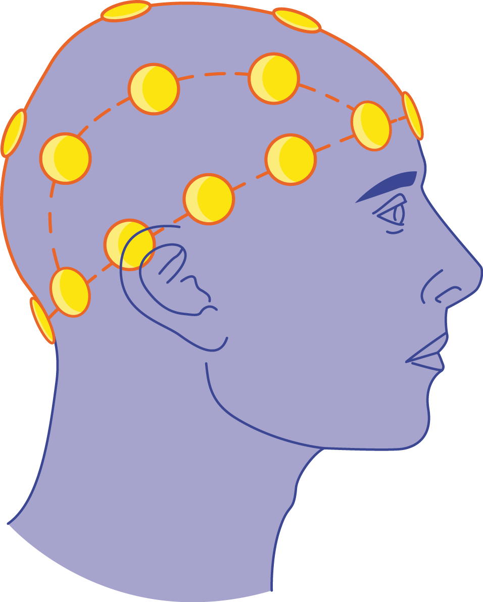

Neurophysiologie
La neurophysiologie est la branche de la physiologie qui s’intéresse à la compréhension des mécanismes et fonctions du système nerveux. Pour être précis, elle étudie l’interaction qu’ont les différentes parties du système nerveux. Alors, la neurophysiologie tente de comprendre la manière dont les neurones communiquent et engendrent des stimuli externes et internes à l’aide des signaux électrochimiques.
Troubles
On recourt à la neurophysiologie lorsqu’on soupçonne un patient d’avoir des problèmes médicaux tels que des lésions cérébrales, des troubles de la conscience, des troubles du sommeil ou encore des épilepsies.
Spécialistes
Dans cette spécialité, c’est le neurophysiologiste qui mesure les signaux provenant du système nerveux des patients. Pour ce faire, ils effectuent des examens, comme un électroencéphalogramme (EEG), afin de mesurer l’activité cérébrale, juger les résultats et passer le relais au médecin.
Études
Pour devenir neurophysiologiste au Québec, il faut avoir un diplôme d’étude collégiales en sciences lettres et arts ou en science de la nature avec les compétences de biologie et de chimie. Ainsi, il sera possible de faire un doctorat en médecine. Avec ce doctorat, il est possible d’être admis au programme de maîtrise en neuroscience, ce qui permettra de développer ses connaissances basiques et d’effectuer un travail de recherche afin de s’initier au champ d’étude de la neurophysiologie.
